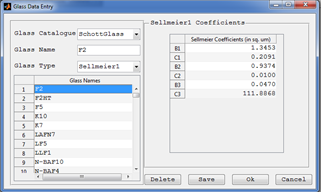

Glass Data Editor

Purpose:
A window used to add new, edit and delete existing glass in the glass catalogues used by the optical system.
Windows Components
- Catalogue Popup: Select the glass catalogue to look for glass.
- Glass Name Text Box: Display name of the glass selected. Or it can also be used to enter a glass name of the new glass to be added.
- Glass Type Popup: Display type of the glass selected. Or it can also be used to enter a glass type of the new glass to be added.
- Glass List Table: Display all glass in the current catalogue.
- Sellmeir Coefficients Panel: Used to view and edit the parameters of the sellmeir glass selected.
- Delete: Deletes the currently selected glass from the catalogue.
- Save: Save the glass data entered to current catalogue.
Created with the Personal Edition of HelpNDoc: Easily create CHM Help documents